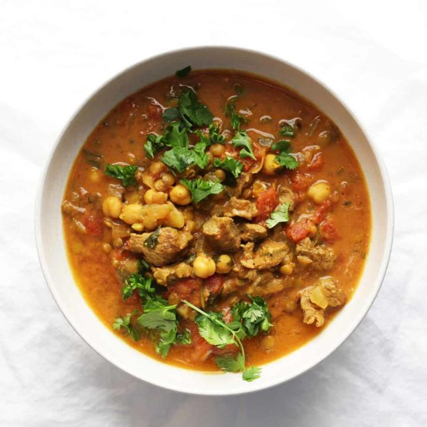
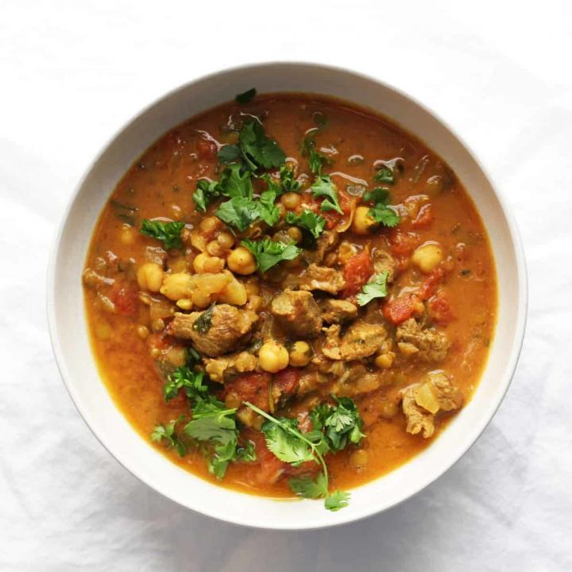

moraccon-harira soup
Harira is a traditional Moroccan soup of tomato, lentils, and chickpeas. Wonderfully fragrant with zesty seasoning, it often ranks high on lists of must-try Moroccan foods.
Harira is a traditional Moroccan soup of tomato, lentils, and chickpeas. Wonderfully fragrant with zesty seasoning, it often ranks high on lists of must-try Moroccan foods.
